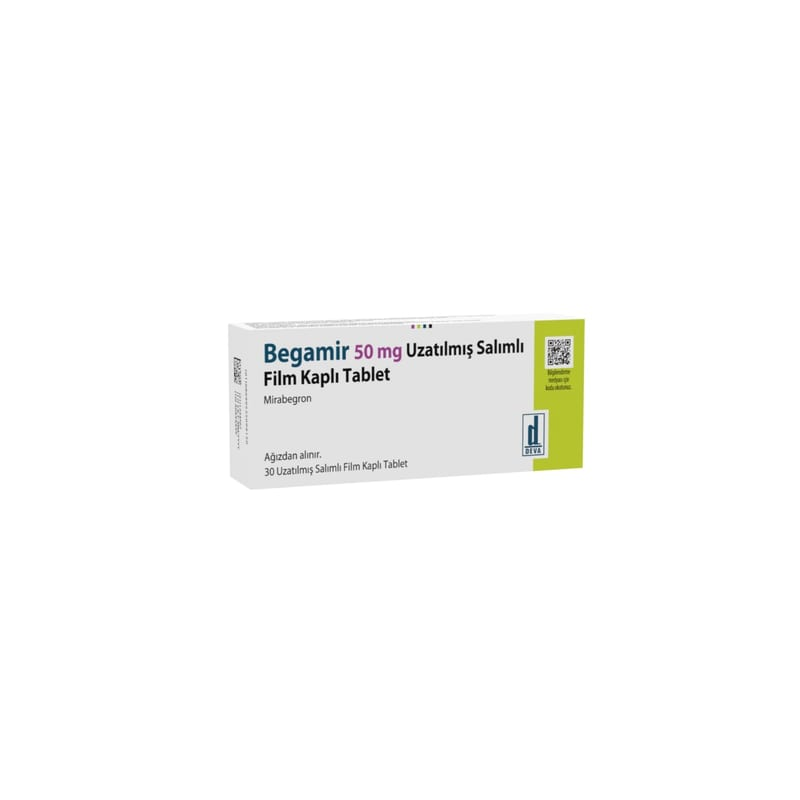

Begamir 50 mg Uzatılmış Salımlı Film Kaplı Tablet (50 adet)

Ne için kullanılır
KT · Bölüm 1BEGAMİR 50 mg uzatılmış salımlı film kaplı tablet, bir yüzde “50” işareti, diğer yüzü düz olan, oval, sarı tabletler şeklindedir.
BEGAMİR, bir kutu içerisinde 10, 20, 30, 50, 60, 90 veya 100 adet uzatılmış salımlı film kaplı tablet olacak şekilde blister ambalajlarda sunulmaktadır.
BEGAMİR, mirabegron etken maddesini içermektedir. Aşırı aktif bir mesanenin aktivitesini azaltan bir mesane kası gevşeticisidir (beta 3-adrenoreseptör agonisti de denir) ve bununla ilişkili belirtileri (semptomları) tedavi eder.
BEGAMİR, yetişkinlerde aşırı aktif bir mesaneye ilişkin aşağıdakilere benzer belirtileri tedavi etmek için kullanılır: - Mesanenizi aniden boşaltma ihtiyacı (aciliyet), - Mesanenizi her zamankinden daha fazla boşaltma ihtiyacı (üriner sıklıkta artış), - Mesanenizi boşaltırken kontrol edememe (aniden idrar kaçırma).
Bu ilacı kullanmaya başlamadan önce bu KULLANMA TALİMATINI dikkatlice okuyunuz, çünkü sizin için önemli bilgiler içermektedir. Bu kullanma talimatını saklayınız. Daha sonra tekrar okumaya ihtiyaç duyabilirsiniz. Eğer ilave sorularınız olursa, lütfen doktorunuza veya eczacınıza danışınız. Bu ilaç kişisel olarak sizin için reçete edilmiştir, başkalarına vermeyiniz. Bu ilacın kullanımı sırasında, doktora veya hastaneye gittiğinizde doktorunuza bu ilacı kullandığınızı söyleyiniz. Bu talimatta yazılanlara aynen uyunuz. İlaç hakkında size önerilen dozun dışında yüksek veya düşük doz kullanmayınız.